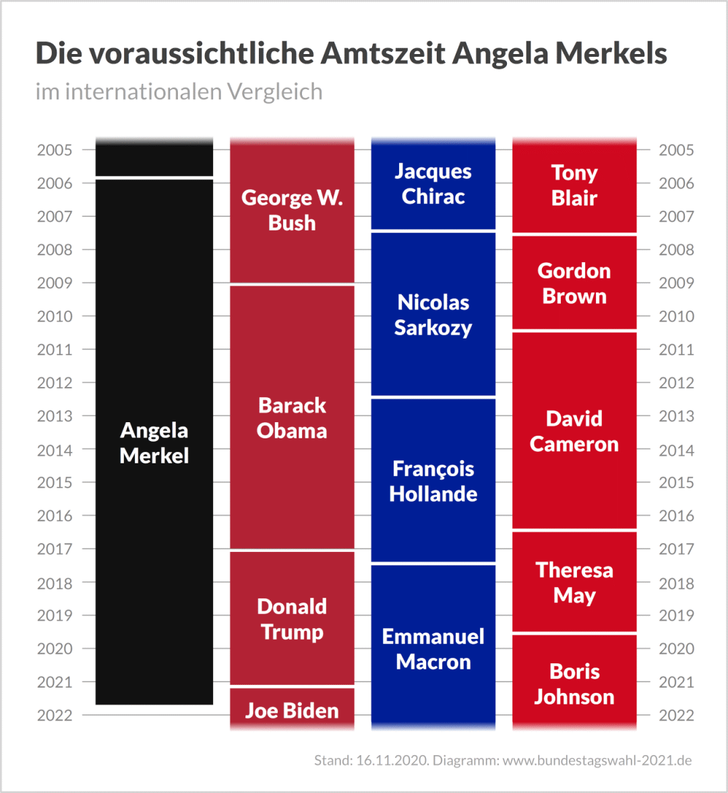

收录于合集 #国政评论 8个

作品简介
【作者】 彭霏霏，国政学人评论员，复旦大学国际关系与公共事务学院
【排版】 高思慧
正文
01
绪论
德国的对华政策在西方发达国家中是“一股清流”。随着中国的崛起，西方国家越发将其视为对手和敌人。美国将中国定义为“战略竞争对手”，欧盟也将中国视作经济和政治体制的竞争对手。同时，英国、澳大利亚等国的外交政策也越发展示出对华的敌意。在默克尔的领导下，德国依旧强调与中国的合作与协调，并将中国视为经济和政治上的重要伙伴。[1]
2018年10月底，默克尔宣布她将不再担任2021年联邦选举中基督教民主联盟（CDU，简称基民盟）的总理候选人。[2]这意味着，在今年9月举行的联邦大选之后，默克尔会挥手告别政坛，德国将步入“后默克尔时代”。
默克尔执掌德国16年，是德国任期最长的领导人之一。这16年间，默克尔一直保持着稳健务实的执政风格，沉着冷静地应对了欧债危机以及目前的新冠危机。然而，默克尔的卸任时间适逢中美竞争加剧、新冠疫情肆虐、民粹主义崛起的挑战。默克尔的离任势必对德国外交政策产生影响，考验外交政策的连续性。对于中德关系而言，这又意味着什么？

图一：默克尔执政时间与美国、法国和英国领导人的比较（图源见文末）
02
德国政坛的未来动向
1.谁将接任默克尔成为总理？
据目前的情况观察，总理人选最有可能从德国最大党——联盟党（The Union）中产生。联盟党是德国中右的党派，由基督教民主联盟和基督教社会联盟（CSU，简称基社盟）两个姊妹党合并而成。德国人通常并不将它们视为两个不同政党，而视为单一政党。基民盟在德国十五个州运作，而基社盟只在德国南部的巴伐利亚州活动。战后德国一共有八位总理，其中五位总理出自基民盟，没有总理出自基社盟。
就在今年1月，基民盟大会上选举产生了新一届基民盟主席阿明·拉舍特（Armin Laschet）。[3]拉舍特是德国人口和工业大州北莱茵- 威斯特法伦州州长，是默克尔中间路线的忠实支持者。拉舍特的当选无疑为后默克尔时代的政策连续性提供了一定程度的保证。
然而，基民盟主席一职并不等同于联盟党的总理候选人：只有先被联盟党提名为总理候选人，才能在9月联邦大选后最终成为德国总理。根据德媒说法，联盟党总理候选人的选举最早可于2021年3月底或4月初进行。[4]
不过，德国人似乎并不支持拉舍特成为总理。在一项民意调查中，只有12%的人支持拉舍特，而基社盟主席马库斯·索德（MarkusSöder）则获得了43%的支持率。[5]在媒体采访中，索德表示自己的志向将留在巴伐利亚。[6]但是，索德的回答十分委婉，他用“将留在巴伐利亚”等间接的方式表达自己的态度，却从未明确表述自己将放弃参与总理候选人竞选。
幸运的是，无论是拉舍特还是索德，这二人都不是对华强硬的鹰派人物。
2.未来政府的可能组合
由于联盟党无法取得议会多数席位，必须再选择一个或两个政党结成联盟组成联合执政政府（coalition）。除联盟党外，其他政党有：
1.强调利益公平分配和公民福利的社会民主党（SPD，简称社民党）；
2.主张经济自由主义的自由民主党（FDP，简称自民党）；
3.坚持环境保护、人权和性别平等的绿党（die Grüne）；
4.实现社会主义，反对资本主义的左翼党（die Linke）；
5.反对移民，欧洲一体化的民粹主义政党德国选择党（AFD，简称选择党）。
目前来看，有可能实现的执政联盟是“牙买加联盟”和“黑绿联盟”。[7]“牙买加联盟”是由联盟党、自民党和绿党组成的联盟。因为这三个党的代表色分别是黑色、黄色和绿色，该颜色组合正好同牙买加国旗重合，故被称作“牙买加联盟”。“黑绿联盟”则是联盟党和绿党组成的联盟。然而，无论是何种联盟，绿党在下一任政府中起到的作用都不可小觑。 在对华政策上，绿党有可能会在香港问题、人权问题和环保问题上对中国发起挑战。
03
**
**
展望后默克尔时代的对华政策
对于默克尔离任后德国对华政策的方向预测，目前主要有三种观点：
1.德国对华态度将日趋强硬
2020年8月3日，德国研究专家诺亚·巴金（Noah Barkin）在“政客”网站（Politico）发表《为什么后默克尔时代的德国将改变对于中国的态度》[8]（Why post Merkel Germany will Change its Tune on China）一文，其中主要观点认为后默克尔时代中德间对抗将成为必然。该文认为，默克尔之所以保持对华友好的态度，是因为默克尔将德国大企业的工业利益（如西门子、大众、宝马等）放在了德国战略利益之前。目前，拜登就任美国总统，美国必然要邀请欧洲盟国与美国一起形成对华统一战线，让德国很难拒绝美国的立场。此外，德国政坛中的鹰派力量正在暗中生长；随着默克尔的离任，德国鹰派的力量将失去压制，对华的强硬态度将会显现出来。文章引用一位联邦议会官员的话说“一旦默克尔走了，我认为您会看到一个快速的转变，可能会是一个巨大的转变”。此外，根据民调显示，9月大选之后基民盟最有可能与绿党组成联合执政政府，而绿党必然会在劳工、人权、气候等议题上与中国产生对立态度。总之，在美国外交压力和绿党内部挑战的双重作用下，德国的对华政策必然由温和转向强硬。
2.后默克尔时代德国依旧秉持务实态度寻求与中国合作
2021年1月15日，华尔街日报德国通讯员博扬·潘切夫斯基（Bojan Pancevski）发表《即使在新任领导下，德国也不会与中国对抗》[9]（Even under new leadership, Germany Won’t Confront China）一文。该文认为后默克尔时代的德国对华政策将依旧保持开放、务实、合作的态度。由于纳粹的历史污点，德国目前尚不能在国际舞台上寻求硬实力的扩张。因此，德国外交政策的主要目标，是扩大商品出口来维持经济繁荣。这需要德国与盟友国和对手国都保持友善而非敌对的关系。基于德国外交政策的主基调不变，默克尔的离任也不能使德国的对华政策改弦更张。其次，德国的经济运转主要靠货物出口，与中国的贸易进出口几乎持平，导致德国成为发达国家中少有的与中国保持贸易持平的发达经济体。目前，中国从新冠疫情中快速恢复，并使德国在中国的出口份额上升，尤其是德国的汽车产品。最后，目前在基民盟大选中出任基民盟主席的拉舍特与默克尔一样，在对华政策上采取了温和的态度。总之，由于二战历史、经济结构和领导特征，后默克尔时代的德国依旧需要同中国维持深度合作。
3.德国不会迅速走向与中国的对抗，但是德国政坛的变动将会给中德关系带来考验
2020年8月26日，《亚洲时报》专栏作家大卫·赫特（David Hutt）发表《中德紧密关系将面临后默克尔时代的考验》[10]（China, Germany Tight Ties will face Post- Merkel Test）一文，认为中德关系不会迅速走向对抗，但将受到德国政坛变动的考验。
首先，在德国总理的人选问题上，热门的继任者都没有体现出对华的对抗态度，温和的阿明·拉舍特甚至倾向于完全避免关于中德关系的辩论。其中，基社盟的主席索德的立场最为亲中，因为基社盟的“老家”在巴伐利亚州，而该州正是宝马、奥迪和西门子等跨国公司所在地，盈利水平均依赖于中国市场的长期增长。
此外，德国并没有认为中国是德国的最大威胁。该文还引用了德国贝塔斯曼基金会（Bertelsmann Stiftung）高级亚洲专家伯恩哈德·巴奇（Bernhard Bartsch）的相关表述：“调查表明，德国人并不认为中国是一个非常激动或紧迫的问题”；“像特朗普的‘中国在偷我们的工作’这样的民粹主义政治运动在德国是行不通的。”
然而，该文同时认为，默克尔告别政坛必然为紧密的中德关系带来挑战。由于新的德国总理经验不丰富、地位不巩固，他很难像默克尔一样顶住压力，避免对中国施加批评。在5月份的一项民意调查中，约有77%的德国人将新冠疫情的流行归结于中国。巴奇说：“对于一个没有默克尔的地位和固执己见的继任者而言，制定一项对华政策可能比避开它更容易。”
除去继任者问题，大选之后执政联盟的组合也将对中德关系带来挑战。目前最有可能的联合执政党派，包括绿党对中国的态度和联盟党不同。例如，绿党曾辩称，柏林应因违反人权而制裁北京，并停止使用华为技术，尤其是对德国正在发展的5G网络。
参考文献
[1] “Germany and China: Bilateral Relations,” Federal Foreign Office, November 6, 2020, https://www.auswaertiges- amt.de/en/aussenpolitik/laenderinformationen/china-node/china/228916, 访问时间：2021年3月12日。
[2]Jörg Rößner,“Dieses Vorgehen ist in der Geschichte der Bundesrepublik ohne Beispiel,” die Welt, October 28, 2020, https://www.welt.de/politik/deutschland/article182916824/Angela-Merkel-Dieses- Vorgehen-ist-in-der-Geschichte-der-Bundesrepublik-ohne-Beispiel.html, 访问时间：2021年3月12日。
[3] “Armin Laschet Offiziell als CDU-Vorsitzender Bestätigt,” Spiegel, January 22, 2021, https://www.spiegel.de/politik/deutschland/armin-laschet-offiziell- als-cdu-vorsitzender-bestaetigt-a-3ee46c25-03f3-430b-83a3-6f8b07eb7338, 访问时间：2021年3月12日。
[4] “Bundestagswahl 2021: Mögliche Spitzenkandidaten der Parteien,” Bundestagswahl, https://www.bundestagswahl-2021.de/spitzenkandidaten/, 访问时间：2021年3月12日。
[5] “Germany: Poll Shows Low Support for New CDU Head as Merkel’s Successor,” Deutsche Welle, January 18, 2021, https://www.dw.com/en/germany-poll-shows- low-support-for-new-cdu-head-as-merkel-successor/a-56256832,访问时间：2021年3月12日。
[6] “Markus Söder Besorgt über Führungsdebatte in der CDU,” Spiegel, November 4, 2019, https://www.spiegel.de/politik/deutschland/markus-soeder-besorgt- ueber-fuehrungsdebatte-in-der-cdu-a-1294747.html, 访问时间：2021年3月12日。
[7] “Mögliche Koalitionen nach der Bundestagswahl 2021,” Bundestagswahl, https://www.bundestagswahl-2021.de/koalitionen/,访问时间：2021年3月12日。
[8] Noah Barkin, “Why post Merkel Germany will Change its Tune on China,” August 3, 2020, https://www.politico.eu/article/why-post-merkel-germany-will- change-its-tune-on-china/, 访问时间：2021年3月12日。
[9]Bojan Pancevski, “Even under New Leadership, Germany Won’t Confront China,” the Wall Street Journal, January 15, 2021, https://www.wsj.com/articles/even- under-new-leadership-germany-wont-confront-china-11610723101, 访问时间：2021年3月12日。
[10]David Hutt, “China-Germany Tight Ties will Face Post-Merkel Test, " Asia Times, August 26, 2020, https://asiatimes.com/2020/08/china-germany-tight- ties-will-face-post-merkel-test/David Hutt, 访问时间：2021年3月12日。
图源链接
[1]www.bundestagswahl-2021.de
文章观点不代表本平台观点
好好学习，天天“在看”
国政学人
支持学术公益与知识传播
微信扫一扫赞赏作者 __赞赏
已喜欢，对作者说句悄悄话
取消 __
发送给作者
发送
最多40字，当前共字
上一页 1/3 下一页
长按二维码向我转账
支持学术公益与知识传播
受苹果公司新规定影响，微信 iOS 版的赞赏功能被关闭，可通过二维码转账支持公众号。